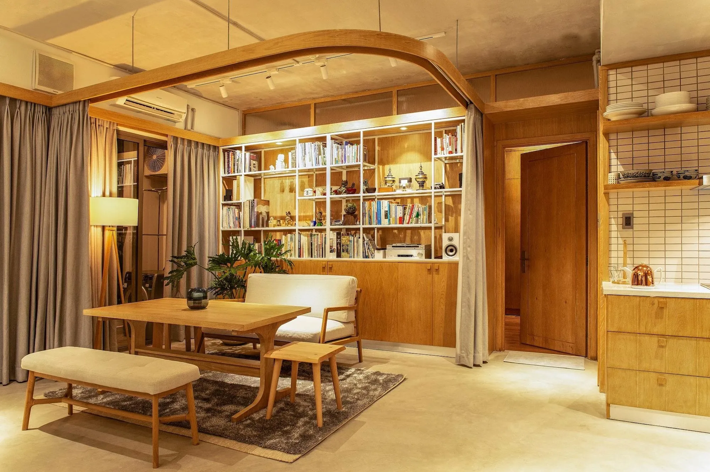
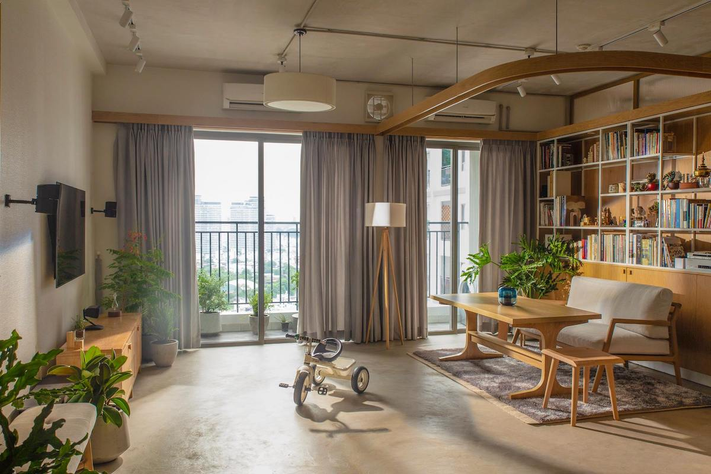
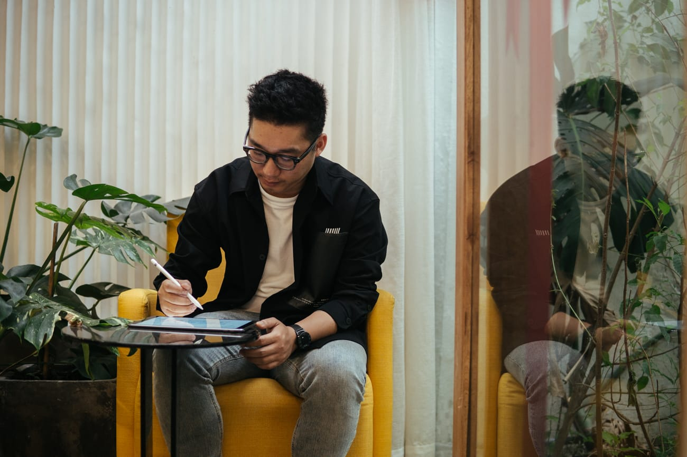
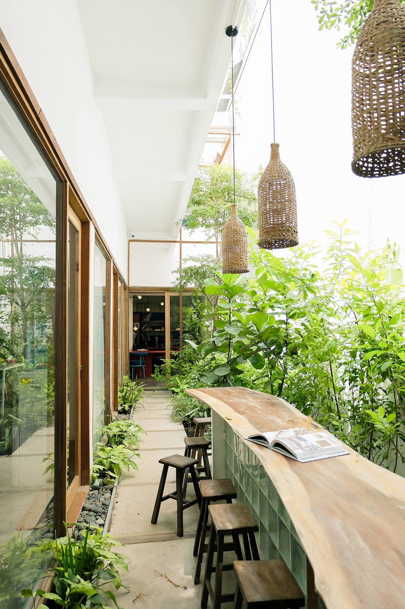
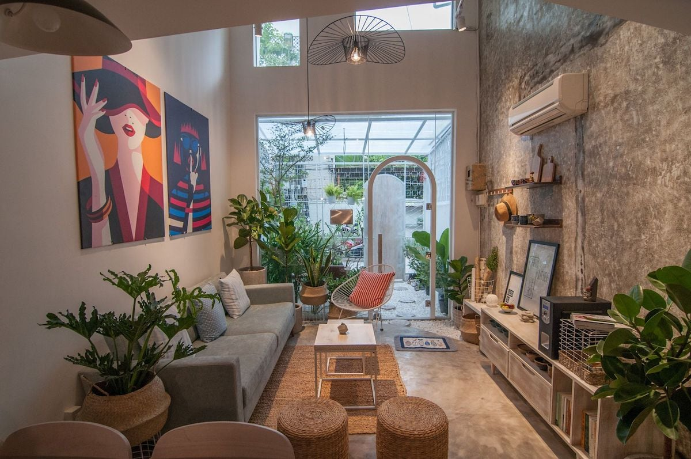
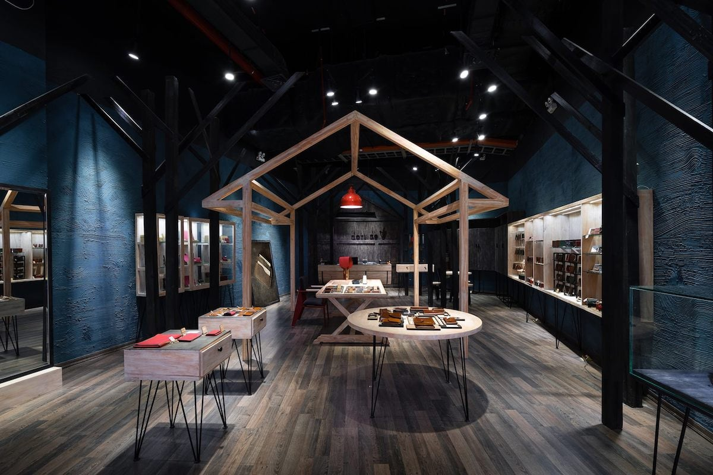
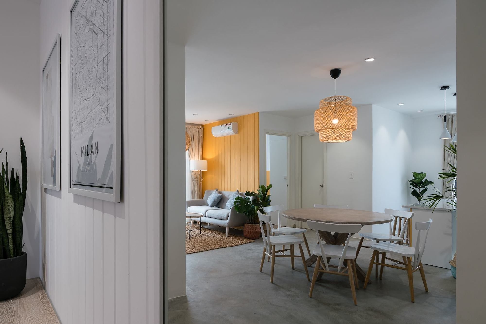
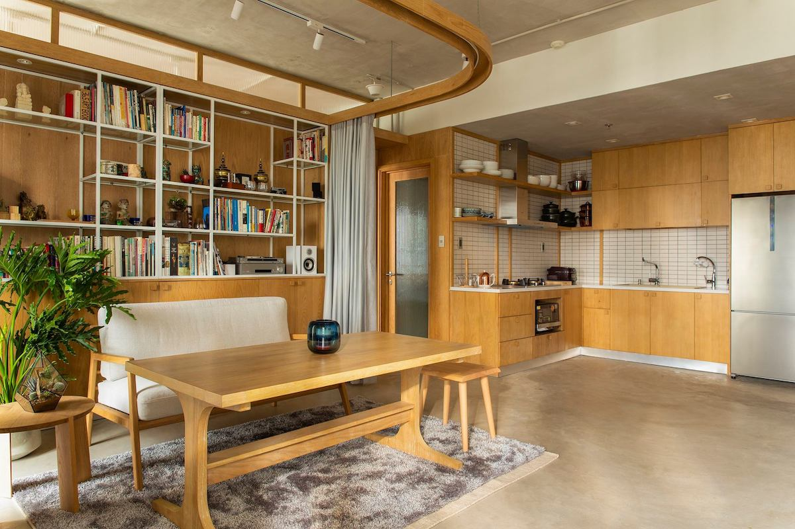
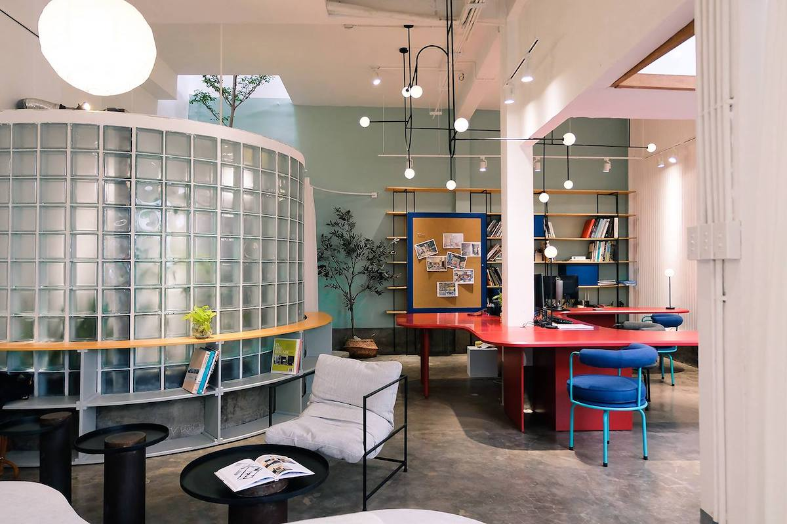

Nhà thiết kế Lại Chính Trực, đồng sáng lập Red5Studio, chia sẻ về một vài dự án tâm huyết của anh và
những lưu ý khi thiết kế không gian sống nhỏ gọn.

“Câu chuyện bắt nguồn từ chính người chủ của căn nhà này, một người từng có thời gian dài sinh
sống
tại Nhật và hiện là Giám đốc sáng tạo của một hãng xe đến từ Thụy Điển, nơi nổi tiếng với triết
lý
Lagom – biết đủ là đủ. Anh từng sống trong một ngôi nhà rộng 200 mét vuông, nhưng vì cảm thấy
như
vậy là quá dư thừa cho 4 người, anh quyết định chuyển đến một căn hộ chỉ rộng 70 mét vuông. Anh
còn
đùa sắp tới có khi anh sẽ xây một cái hộp nhỏ rồi sống trong đấy,” nhà thiết kế Lại Chính
Trực kể
chúng tôi nghe nguồn cảm hứng đằng sau Khoa’s House, một căn hộ do anh thiết kế.

Khoa’s House – căn hộ được xây dựng dựa trên triết lý Lagom và phong cách Japandi. | Nguồn:
Red5Studio & Phú Đào.
“Đây là một căn hộ xây thô, ngoại trừ bức tường phòng toilet bàn giao có sẵn ra, trong nhà không
có
bất cứ bức tường nào khác, mọi không gian đều được phân cách bằng chính những vật dụng nội thất
với
công năng của riêng nó. Bình thường một chiếc bàn ăn sẽ cao tầm 700-750 mm, bàn sofa thì cao
450-550
mm, còn chiếc bàn trong nhà này cao 650 mm, vừa có thể làm bàn tiếp khách, bàn ăn, và kiêm luôn
bàn
làm việc.”
Câu chuyện kể trên là một ví dụ điển hình cho xu hướng nhà ở nhỏ gọn, đang dần lên ngôi tại các thành
phố đông dân cư trên toàn cầu, trong đó có Thành phố Hồ Chí Minh. Tuy nhiên, “nhỏ” không có nghĩa là
chật chội và tạm bợ. Ngược lại, theo chúng tôi, “nhỏ” chính là chất xúc tác để con người ta trở nên
sáng tạo, học cách kết hợp giữa thiết kế và công năng.

Chân dung nhà thiết kế Lại Chính Trực.
Trong quá trình nghiên cứu về xu hướng thiết kế này, chúng tôi phát hiện ra nhà thiết kế Lại Chính
Trực, đồng sáng lập Red5Studio, một công ty thiết kế nội thất tại Sài Gòn. Qua tìm hiểu, chúng tôi
biết được Chính Trực và Red5Studio từng nhiều lần thiết kế và cải tạo các không gian có diện tích
khiêm tốn. Trong đó có cửa hàng flagship của nhà thiết kế Nguyễn Hoàng Tú, nơi phản ánh rõ cá tính
của một người làm thời trang mà theo Trực là mang nhiều mảng màu tương phản.
Trong bài viết dưới đây, Trực sẽ chia sẻ với chúng ta đôi điều về studio trẻ của Trực, một vài dự án
anh tâm đắc, cũng như một số điều mà theo anh là người sở hữu không gian sống nhỏ cần lưu ý.
Khi tìm hiểu về Red5Studio trên các phương tiện thông tin đại chúng,
chúng tôi thường thấy các dự án
thiết kế của các bạn đi kèm với những từ khoá như “cải tạo”, “không gian nhỏ”… Phải chăng đây là
“brief” yêu thích của các bạn?
Thật ra không phải do chúng mình muốn, mà đơn giản là chỉ có người làm kiến trúc mới được xây dựng
mới hoàn toàn thôi. Còn thiết kế nội thất là gì? Là người ta đưa cho bạn một cái nhà đã làm sẵn, và
yêu cầu bạn trang trí trong đó. Ngoại trừ trường hợp là chung cư mới, còn lại gần như là công việc
cải tạo. Vì vậy, theo chúng mình, đến 50% công việc của người làm nội thất là cải tạo lại không gian
bên trong, biến nó từ cũ thành mới. Nếu có liên quan đến kiến trúc thì cũng chỉ là chỉnh sửa nho nhỏ
mà thôi.

Một góc ngoài trời tại văn phòng mà Red5Studio chia sẻ chung với một công ty kiến trúc và một
công ty xây dựng khác. | Nguồn: Red5Studio & Vũ Đức Nguyên.
Phong cách thiết kế đặc trưng của bạn là gì?
Thời điểm thành lập Red5Studio cũng là lúc phong cách Scandinavian (Bắc Âu) lên ngồi, nên các thiết
kế lúc đầu của mình luôn mang đậm tinh thần Scandinavian. Điển hình là dự án Jouri Dessert and Tea,
dự án mang lại cho mình nhiều cảm xúc nhất. Sau một thời gian hoạt động, mình muốn hướng đến nhiều
phong cách đa dạng, hiện đại hơn.
Ngoài ra, mỗi thiết kế của mình đều có một câu chuyện ẩn chứa trong đó, và chính câu chuyện này sẽ là
ý tưởng chủ đạo để mình có thể phát triển thiết kế. Đôi khi câu chuyện đến từ người chủ của không
gian đó, cũng có đôi khi là đến như những bộ phim, quyển sách mà mình từng xem qua.
Hãy kể một số câu chuyện đằng sau các dự án của mình.

Nhà có hai người, được thiết kế với mảnh vườn ở phía trước nhà, không gian bên trong và bên
ngoài được phân cách bởi một lớp kính “vô hình”. | Nguồn: Red5Studio.
Nhà có hai người – Đây không phải nhà ở, cũng không phải quán nước, mà là nơi để thử nghiệm
các sản phẩm giải độc (detox) lành mạnh. Nhưng khi thiết kế, mình muốn biến nó thành một ngôi nhà mà
ở đó người ta cảm thấy nhẹ nhàng, thư giãn. Vì thế mình mới thiết kế ra một khu vườn, để trước khi
vào được nhà người ta phải đi ngang qua đây. Đây là một không gian mở với vách ngăn bằng kính, để
khi ngồi thư giãn ngoài vườn bạn vẫn có thể nhìn xuyên vào bên trong. Đặt tên là Nhà có hai người vì
chủ ở đây chỉ có hai người thôi.

“Đôi khi câu chuyện đến từ người chủ của không gian đó, cũng có đôi khi là đến như những bộ
phim, quyển sách mà mình từng xem qua,” Trực chia sẻ về ý tưởng đằng sau cửa hàng flagship của
Doris de V. | Nguồn: Red5Studio.
Doris de V – Đây là cửa hàng flagship của một thương hiệu da mộc thủ công cao cấp. Ý tưởng cho
thiết kế nội thất ở đây được mình lấy từ bộ phim The Revenant (2015), kể về trận chiến sinh tồn của
anh chàng thợ săn Hugh Glass. Từ màu xanh chủ đạo cho đến khu vực workshop được thiết kế như những
cánh rừng cách điệu.
Các bạn có thấy mình may mắn không? Khi lấy một câu chuyện nào đó để
xây dựng concept cho các không
gian và được chủ đầu tư chấp thuận.
Chúng mình không gọi đó là may mắn vì đã hoạch định cả một lộ trình dài để có thể gặp được những
người khách như vậy. Không phải tự nhiên mà bạn gặp được một người khách đúng gu, hoặc tìm đến vì
tin tưởng cái gu của bạn. Để có được như ngày hôm nay, chúng mình không cho phép bản thân được thỏa
hiệp. Vì thỏa hiệp được một lần thì sẽ có rất nhiều lần thoả hiệp khác. Làm đại khái một lần thì
những người đến sau cũng chỉ kỳ vọng một thứ đại khái tương tự.
Quay trở lại với chủ đề không gian sống nhỏ gọn, theo bạn, điều đầu tiên mà những người sở hữu căn
hộ diện tích nhỏ cần phải lưu tâm là gì?
Đầu tiên và quan trọng nhất, đó là các bạn phải biết mình muốn gì. Nhiều người không biết mình muốn
gì, có bao nhiêu đồ đạc, cái nào cần giữ lại, và cái nào nên bỏ đi… Mình nghĩ đây là tính cách điển
hình của người Việt chúng ta – có những thứ đã cũ lắm rồi, giữ lại cũng không để làm gì nhưng vẫn
tiếc nuối, không muốn vứt đi. May mắn là các khách hàng của mình, sau một hồi trò chuyện, đều thoải
mái với việc bỏ bớt đồ đi.

“Đầu tiên và quan trọng nhất, đó là các bạn phải biết mình muốn gì, có bao nhiêu đồ đạc, cái nào
cần giữ lại, và cái nào nên bỏ đi…” | Nguồn: Red5Studio & Quang Trần.
Vả lại, chúng mình cũng có “chiêu”. (cười) Trước khi bắt tay vào làm bất kỳ dự án nào, chúng mình
cũng gửi cho khách hàng một danh sách gồm 5 câu hỏi nhằm giúp họ hiểu rõ họ hơn. Đó là:
Hiện trạng của công trình đó như thế nào? – Để thu thập các thông tin về mặt bằng đó.
Yêu cầu thiết kế của họ là gì? – Bao gồm tất cả những thứ mà họ muốn có trong nhà, công
năng cần thiết,…
Họ mong muốn phong cách thiết kế như thế nào? – Điều này không được nói suông. Họ phải
gửi tất cả những hình ảnh yêu thích, cho dù nó không mang cùng một phong cách. Sau đó chúng mình
sẽ tự chắt lọc lại.
Ngân sách của họ là bao nhiêu? – Nên thẳng thắn ngay từ đầu. Việc giấu nhẹm đi chỉ làm
phức tạp hóa vấn đề, tiêu tốn thời gian thiết kế và tìm nguồn cung ứng. Trong một số trường hợp,
việc này còn gây hụt hẫng cho chủ nhà vì thành phẩm cuối cùng không đúng như bản thiết kế do cắt
giảm ngân sách.
Thời gian họ cần bàn giao công trình? – Chúng mình cần ít nhất 1 tháng thiết kế và 1
tháng thi công để cho ra một thành phẩm chỉnh chu.
Một số tips để mở rộng không gian?
Chúng ta hoàn toàn có thể kết hợp một số không gian lại với nhau. Ví dụ như phòng khách và phòng ăn,
hay phòng ngủ tháo dỡ được. Đối với bếp, mình nghĩ có thể người độc thân sẽ không cần. Nhưng nếu bạn
đã lập gia đình thì nên có bếp, vì nó sẽ làm không gian sống ấm áp hơn hẳn. Sử dụng các màu sắc tươi
sáng làm tông màu chủ đạo và trồng thêm cây xanh để đưa thiên nhiên vào không gian sống.

Japandi là sự pha trộn giữa phong cách Nhật Bản và phong cách Scandinavian, vô cùng phù hợp cho
những ngôi nhà có diện tích nhỏ vì nó tinh giản, thanh lịch và phù hợp với điều kiện thời tiết
tại Việt Nam. | Nguồn: Red5Studio & Phú Đào.
Đối với nội thất, hãy lựa chọn những vật dụng thông minh, linh hoạt và có nhiều công năng. Bạn có thể
mua đồ thiết kế sẵn hoặc đặt làm riêng. Tuy nhiên, ngoại trừ những vật dụng phải làm theo kích
thước, mình khuyên các bạn nên mua đồ gia công sẵn vì tỉ lệ đẹp và giá cả phải chăng hơn. Ở Việt Nam
hiện nay, việc tự đặt đồ nội thất còn rất nhiều hạn chế.
Theo bạn, xu hướng thiết kế và trang trí nội thất nào sẽ lên ngôi trong năm 2019?
Theo mình, 2019 sẽ là năm mà phong cách Japandi và phong cách lấy cảm hứng từ Art Deco (trường phái
nghệ thuật và trang trí mang tính chiết trung) lên ngôi.
Japandi là sự pha trộn giữa phong cách Nhật Bản và phong cách Scandinavian, vô cùng phù hợp cho những
ngôi nhà có diện tích nhỏ vì nó tinh giản, thanh lịch và phù hợp với điều kiện thời tiết tại Việt
Nam.

Một góc văn phòng đầy màu sắc của Red5Studio. | Nguồn: Red5Studio & Vũ Đức Nguyên.
Còn với phong cách lấy cảm hứng từ Art Deco, mà cụ thể là những đồ dùng nội thất đậm chất hình học
với kiểu dáng dứt khoát, không quá cầu kỳ, uốn lượn, hoặc vận dụng các chi tiết của Art Deco nhưng
được cách điệu để đơn giản hơn.
Năm 2019 cũng là năm mà người ta sử dụng các màu sắc nổi bật một cách tự tin hơn. Tương tự như cách
mà chúng mình thiết kế văn phòng Red5Studio tại đây.